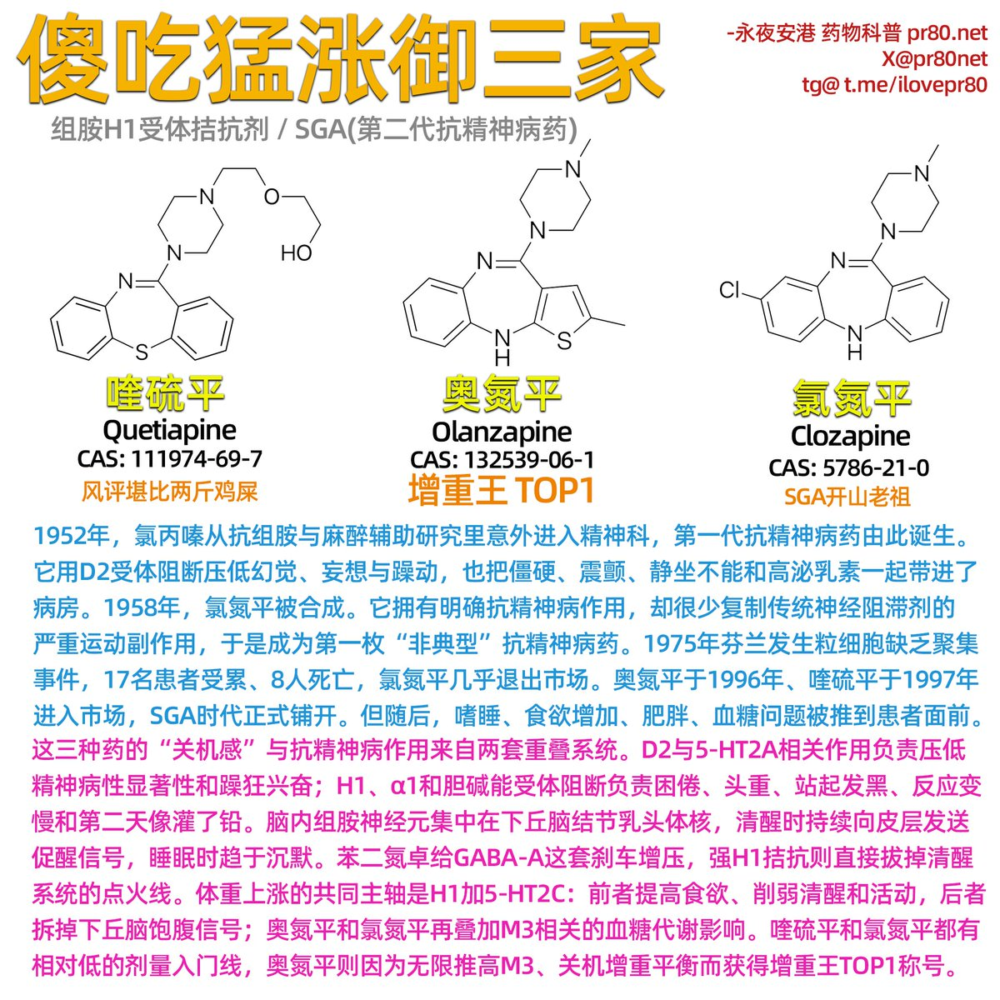

吃这家伙就得甩开膀子吃哎!太好吃了!太得劲了!咔咔往里炫啊!小味挠的一下就上来了，香懵了香劈叉了!嗷嗷滴欧欧滴咔咔滴嘎嘎滴，咱就开造吧!老铁们搂他就完事了!!哎妈呀嘎嘎香啊，就好这一口!提了吐露的就往嘴里扒拉呀，嘎嘣脆啊，这小味闹闹的!太讷了!我愿吃!!


接下来登场的是王多鱼脂肪险冠名赞助商、精神病院增重传说、每年增加脂肪可绕地球三圈、关机效果堪比电脑电源上浇热水的傻吃猛涨御三家猪饲料：组胺H1受体拮抗剂御三家喹硫平、奥氮平、氯氮平。司美格鲁肽上场刷了一圈发现奥氮平进来扫反炸鱼了一个月胖了十斤从此退市。米氮平因功过相抵不列入此栏。 https://t.co/ecmel2jklA